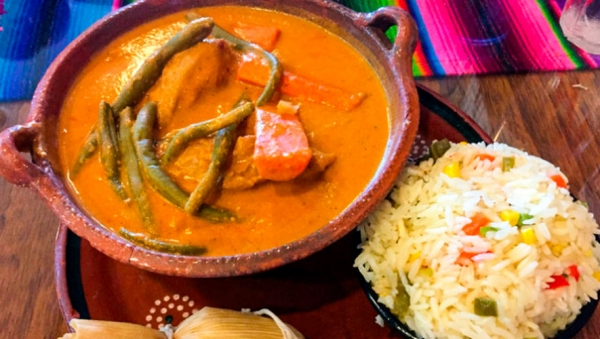
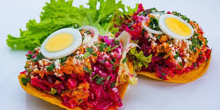
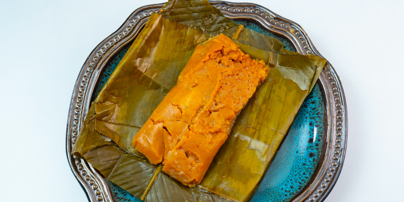
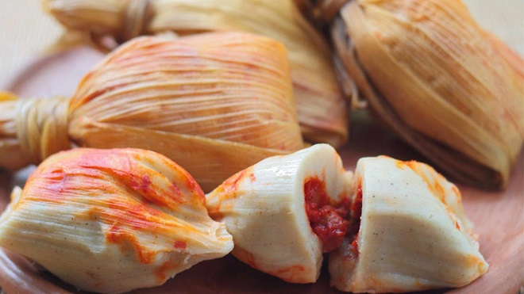

Comidas tipicas con identidad, color y tradicion
Reunimos cuatro platillos emblematicos de Guatemala en una experiencia mas dinamica, compacta y agradable para leer. Cada entrada mezcla historia, sabor y una impresion personal.
Un blog visual sobre recetas y antojos tipicos
Reunimos cuatro platillos emblematicos de Guatemala en una experiencia mas dinamica, compacta y agradable para leer. Cada entrada mezcla historia, sabor y una impresion personal.
Cuatro entradas principales con una lectura breve y visual.

Un recado intenso y muy representativo de la cocina guatemalteca, conocido por su sabor profundo y su presencia en celebraciones.
Leer articulo
Un plato llamativo por su mezcla de ingredientes y colores, ideal para quien busca una comida vistosa y llena de contraste.
Leer articulo
Originarios de Quetzaltenango, son una preparacion apreciada por su textura suave y por el lugar que ocupa en reuniones familiares.
Leer articulo
Pequenos, practicos y muy conocidos en Guatemala, con una historia larga dentro de la comida tradicional cotidiana.
Leer articulo